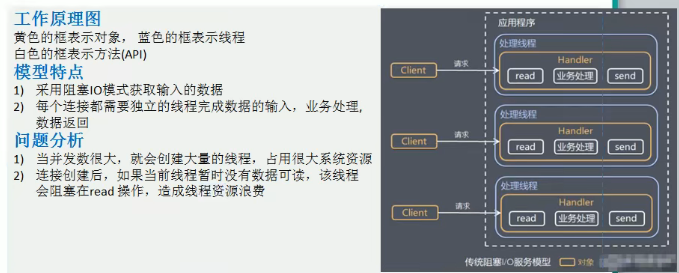

| 类型 | 含义 | 说明 | 使用场景 |
|---|---|---|---|
| BIO | 同步并阻塞IO | 服务器实现模式为一个连接对应一个线程， 客户端连接过多会严重影响性能 |
连接数少且固定的架构，对服务器资源要求高，并发局限于应用中，如数据库连接 |
| NIO | 同步非阻塞IO | 服务器实现模式为一个线程处理多个连接， 即客户端发送的连接请求都会注册到多路复用上； 多路复用器轮询到有IO请求就进行处理 |
连接数多且连接较短的架构，如聊天、弹幕、服务器间通讯 |
| AIO | 异步非阻塞IO | 无论是客户端的连接请求还是读写请求都会异步执行； | 连接数较多且连接较长的架构，充分调用操作系统参与 |
1、传统的Java io编程、其相关的类和接口在java.io包下
2、同步阻塞。服务器实现模式为一个连接一个线程，即客户端有连接请求时服务器端就要启动一个线程进行处理，如果这个连接不做任何事情会造成不必要的线程开销
3、执行流程：
服务器端启动一个ServerSocket
客户端启动Socket对服务器进行通信，默认情况下服务器端需要对每个客户端建立一个线程与之通讯
客户端发出请求后，先咨询服务器是否有线程响应，如果没有则会等待或者被拒绝 如果有响应，客户端会等待请求结束后才继续执行
4、模型：

1、原生jdk io上的一个改进 同步非阻塞！
2、三大核心组件:
| 类型 | 含义 | 理解 | |
|---|---|---|---|
| Channel | 通道 | 一个Channel就代表一个连接 |  |
| Buffer | 缓冲区 | 用于临时存储的一块内存 | |
| Selector | 选择器 | 对Channel的一个管理器，监听通道的事件 |
3、模型：
4、特性：
a. 面向缓冲，数据读取到一个它稍后处理的缓冲区，需要时可以在缓冲区中前后移动，这就增加了处理过程中的灵活性，可以提供非阻塞的高伸缩性网格；
b. 非阻塞；
c. 通过选择器来模拟多线程；
1、BIO以流的方式处理数据，NIO以块的方式处理数据，块的效率 > 流的效率
2、BIO阻塞 NIO非阻塞
3、BIO基于字节流和字符流进行操作；NIO基于Channel(通道)和Buffer(缓冲区)进行操作，数据总是从通道内读取到缓冲区或者从缓冲区写入到通道。
4、BIO监听一个连接需要一个线程，NIO中一个线程可以监听多个连接
1、每个channel都对应一个buffer
2、selector对应一个线程，一个线程对应多个channel
3、selector选择哪个channel是由事件决定的
4、数据的读写都是操作的buffer
5、BIO中要么是输入流要么是输出流，NIO中的Buffer可读也可写
1、ByteBuffer支持类型化的put和get，put放入的是什么数据类型 get就应该使用相应的类型来取出
2、可以改变Buffer的可读性
3、NIO提供MappedByteBuffer，可以直接让文件在内存中修改(堆外内存)，相当于直接在操作系统上操作文件而不用再拷贝一份进行操作，效率快
4、读写操作可以通过一个Buffer来操作，NIO还支持通过多个Buffer操作即Buffer数组形式操作
package com.dwk.nio;
import java.io.*;
import java.net.InetSocketAddress;
import java.net.ServerSocket;
import java.nio.ByteBuffer;
import java.nio.IntBuffer;
import java.nio.MappedByteBuffer;
import java.nio.channels.*;
import java.util.ArrayList;
import java.util.Arrays;
import java.util.Iterator;
import java.util.Set;
/**
* nio 案例实现
*/
public class NioDemo {
public static void main(String[] args) {
//buffer的基本使用
//intBuffTest(5);
//channel的基本使用
//channelTest();
//文件拷贝
//transferFormTest("","");
//buffer的存取
//bufferPutGet();
//buffer的只读
//readOnlyBuffer();
//使用byteBuffer数组读取进行数据交互
bufferArray();
}
public static void intBuffTest(int capacity) {
//创建一个容量大小为capacity的buff
IntBuffer allocate = IntBuffer.allocate(capacity);
for (int i = 0; i < capacity; i++) {
allocate.put(i * 2);
}
//将buffer切换，读写切换 处理buffer内的标记
allocate.flip();
//指定开始读取的位置
//allocate.position(1);
//指定结束读取的位置
//allocate.limit(2);
while (allocate.hasRemaining()){
System.out.println(allocate.get());
}
}
public static void channelTest(){
//DatagramChannel 用于UDP数据的读写，ServerSocketChannel/SocketChannel用于TCP的数据读写
//文件写通道
fileChannelWriteTest();
//文件读通道
fileChannelReadTest();
//使用一个通道完成文件的读写 - 文件拷贝
fileChannelWriteAndReadTest();
}
/**
* 文件写入
*/
public static void fileChannelWriteTest(){
FileOutputStream fileOutputStream = null;
FileChannel fileChannel = null;
ByteBuffer byteBuffer;
try {
String str = "fileChannelTest";
fileOutputStream = new FileOutputStream("C:\\duwk\\code\\myself\\frame-master\\netty\\src\\main\\resources\\file\\FileChannel.txt");
//获取通道
fileChannel = fileOutputStream.getChannel();
//创建缓冲区
byteBuffer = ByteBuffer.allocate(1024);
//写入缓冲区
byteBuffer.put(str.getBytes("UTF-8"));
//缓冲区索引重置
byteBuffer.flip();
//缓冲区数据写入通道
fileChannel.write(byteBuffer);
} catch (FileNotFoundException e) {
throw new RuntimeException(e);
} catch (UnsupportedEncodingException e) {
throw new RuntimeException(e);
} catch (IOException e) {
throw new RuntimeException(e);
}finally {
try {
fileOutputStream.close();
fileChannel.close();
} catch (IOException e) {
throw new RuntimeException(e);
}
}
}
/**
* 文件读取
*/
public static void fileChannelReadTest(){
FileInputStream fileInputStream = null;
ByteBuffer byteBuffer = null;
FileChannel channel = null;
try {
String filePath = "C:\\duwk\\code\\myself\\frame-master\\netty\\src\\main\\resources\\file\\FileChannel.txt";
File file = new File(filePath);
fileInputStream = new FileInputStream(file);
//通道读取文件
channel = fileInputStream.getChannel();
//缓冲区读取通道
byteBuffer = ByteBuffer.allocate((int) file.length());
channel.read(byteBuffer);
byteBuffer.flip();
//缓冲区数据输出
System.out.println(new String(byteBuffer.array(),"UTF-8"));
} catch (FileNotFoundException e) {
throw new RuntimeException(e);
} catch (IOException e) {
throw new RuntimeException(e);
}finally {
try {
fileInputStream.close();
channel.close();
} catch (IOException e) {
throw new RuntimeException(e);
}
}
}
/**
* 文件拷贝
*/
public static void fileChannelWriteAndReadTest(){
FileOutputStream outputStream = null;
FileInputStream inputStream = null;
ByteBuffer byteBuffer = null;
try {
String fileName = "C:\\duwk\\code\\myself\\frame-master\\netty\\src\\main\\resources\\file\\FileChannel.txt";
String targetFileName = "C:\\duwk\\code\\myself\\frame-master\\netty\\src\\main\\resources\\file\\FileChannel副本.txt";
File file = new File(fileName);
File fileClone = new File(targetFileName);
if (fileClone.exists()) {
fileClone.delete();
fileChannelWriteAndReadTest();
}
inputStream = new FileInputStream(file);
//读取源文件流到通道
FileChannel inChannel = inputStream.getChannel();
//通道中的数据流写入到缓冲区
byteBuffer = ByteBuffer.allocate(1024);
inChannel.read(byteBuffer);
byteBuffer.flip();
//将缓冲区中的数据流写入到另一个通道
outputStream = new FileOutputStream(fileClone);
FileChannel outChannel = outputStream.getChannel();
outChannel.write(byteBuffer);
}catch (Exception e){
e.printStackTrace();
}finally {
try {
outputStream.close();
inputStream.close();
} catch (IOException e) {
throw new RuntimeException(e);
}
}
}
/**
* buffer的类型存取 按顺序存取
*/
public static void bufferPutGet(){
ByteBuffer byteBuffer = ByteBuffer.allocate(64);
byteBuffer.putInt(1);
byteBuffer.putLong(1L);
byteBuffer.putChar('A');
byteBuffer.putShort((short) 1);
byteBuffer.flip();
//正常取出
int anInt = byteBuffer.getInt();
long aLong = byteBuffer.getLong();
char aChar = byteBuffer.getChar();
short aShort = byteBuffer.getShort();
System.out.println(anInt);
System.out.println(aLong);
System.out.println(aChar);
System.out.println(aShort);
System.out.println("======================");
//乱序取出 有异常
short bShort = byteBuffer.getShort();
char bChar = byteBuffer.getChar();
long bLong = byteBuffer.getLong();
int bnInt = byteBuffer.getInt();
System.out.println(bnInt);
System.out.println(bLong);
System.out.println(bChar);
System.out.println(bShort);
}
/**
* 设置buffer只读
*/
public static void readOnlyBuffer(){
ByteBuffer byteBuffer = ByteBuffer.allocate(64);
byteBuffer.putInt(1);
//设置只读
byteBuffer.asReadOnlyBuffer();
int anInt = byteBuffer.getInt();
System.out.println("buffer只读 ==>" + anInt);
}
/**
* 使用通道的transferFrom方法拷贝文件
* @param sourcePath 源文件路径
* @param targetPath 目标文件路径
*/
public static void transferFormTest(String sourcePath,String targetPath){
FileInputStream inputStream = null;
FileOutputStream outputStream = null;
FileChannel inputStreamChannel = null;
FileChannel outputStreamChannel = null;
try {
//创建文件流
inputStream = new FileInputStream(sourcePath);
outputStream = new FileOutputStream(targetPath);
//信道
inputStreamChannel = inputStream.getChannel();
outputStreamChannel = outputStream.getChannel();
//拷贝 参数：src = 源通道 position = 文件内开始转移的位置，必须是非负数 count = 最大的转换字节数，必须非负数
outputStreamChannel.transferFrom(inputStreamChannel,0,inputStreamChannel.size());
} catch (FileNotFoundException e) {
throw new RuntimeException(e);
} catch (IOException e) {
throw new RuntimeException(e);
}finally {
try {
//关闭通道和流
inputStreamChannel.close();
outputStreamChannel.close();
inputStream.close();
outputStream.close();
} catch (IOException e) {
throw new RuntimeException(e);
}
}
}
/**
* 零拷贝
* mappedByteBuffer - 可以让文件直接在内存(堆外内存)中进行修改，操作系统不必拷贝一次 NIO同步到文件
* 相当于直接操作源文件，性能高，但是不安全
*/
public static void mappedByteBufferTest(){
RandomAccessFile randomAccessFile = null;
try {
//name : 文件名 mode：模式（r，rw，rws，rwd）
randomAccessFile = new RandomAccessFile("", "");
//获取通道
FileChannel channel = randomAccessFile.getChannel();
//MapMode mode 模式, long position 可以直接修改的起始位置, long size 映射到内存的大小(不是索引位置)即文件的多少个字节映射到内存
MappedByteBuffer map = channel.map(FileChannel.MapMode.READ_WRITE, 0, 5);
//修改文件
map.put(0,(byte) 'A');
map.put(10,(byte) 'B');
} catch (FileNotFoundException e) {
throw new RuntimeException(e);
} catch (IOException e) {
throw new RuntimeException(e);
}finally {
try {
randomAccessFile.close();
} catch (IOException e) {
throw new RuntimeException(e);
}
}
}
/**
* buffer的分散和聚集
* buffer数组操作 Scattering:将数据写入到buffer时可以采用buffer数组依次写入 Gathering：从buffer读取数据时依次读取buffer数组
*/
public static void bufferArray(){
//服务端通道
ServerSocketChannel serverSocketChannel = null;
//客户端通道
SocketChannel socketChannel = null;
try {
//创建服务端通道
serverSocketChannel = ServerSocketChannel.open();
//指定端口
InetSocketAddress inetSocketAddress = new InetSocketAddress(6666);
//绑定端口并启动
serverSocketChannel.socket().bind(inetSocketAddress);
//服务端的buffer数组
ByteBuffer[] byteBuffers = new ByteBuffer[2];
//初始化buffer大小
byteBuffers[0] = ByteBuffer.allocate(5);
byteBuffers[1] = ByteBuffer.allocate(3);
//等待客户端连接
socketChannel = serverSocketChannel.accept();
//每次从客户端通道读取的字节数
int countByte = 8;
//获取客户端发送的数据,,循环读取
while (true){
//统计读取的字节数
int byteRead = 0;
while (byteRead < countByte){
//从客户端通道读取字节到buffer数组
long read = socketChannel.read(byteBuffers);
byteRead += read;
System.out.println("累计读取的字节:" + byteRead);
Arrays.stream(byteBuffers).map(buffer -> "position = " + buffer.position() + " limit = " + buffer.limit()).forEach(System.out::println);
}
//将所有的buffer反转
Arrays.stream(byteBuffers).forEach(buffer -> {buffer.flip();});
//将数据读出显示到客户端
long byteWrite = 0;
while (byteWrite < countByte){
long writeByte = socketChannel.write(byteBuffers);
byteWrite += writeByte;
}
//将所有的buffer清除
Arrays.stream(byteBuffers).forEach(buffer -> {buffer.clear();});
System.out.println("byteRead : " + byteRead + " byteWrite : " + byteWrite + " byteCount : " + countByte);
}
} catch (IOException e) {
throw new RuntimeException(e);
}finally {
try {
serverSocketChannel.close();
socketChannel.close();
} catch (IOException e) {
throw new RuntimeException(e);
}
}
}
}
1、Java的NIO用非阻塞的IO方式。可以用一个线程处理多个客户端的连接，就会使用到Selector(选择器)
2、Selector能检测多个通道上是否有事件发生(多个Channel以事件的方式可以注册到同一个Selector)，如果有事件发生，便获取事件然后针对每个事件进行相应的处理。这样就可以只用一个单线程去管理多个通道，也就是管理多个连接和请求。
3、只用在真正有读写事件发生时，才会进行读写，减少系统开销，不用为每个连接都创建一个线程
4、避免了线程上下文切换的问题
5、Selector示意图和特点说明

Selector、SelectorKey、ServerSocketChannel、SocketChannel之间的关系如图；
1、当客户端连接时，会通过ServerSocketChannel得到SocketChannel；
2、将SocketChannel注册到指定的Selector上，一个Selector上可以注册多个SocketChannel；
3、注册后返回一个SelectionKey会和该Selector关联(集合)；
4、Selector进行监听select方法，返回有事件发生的通道的个数；
5、进一步得到各个SelectionKey(有事件发生)；
6、再通过SelectionKey反向获取SocketChannel；
7、可以通过得到的SocketChannel完成业务处理；
8、demo代码：
package com.dwk.netty;
import java.io.IOException;
import java.net.InetSocketAddress;
import java.nio.ByteBuffer;
import java.nio.channels.*;
import java.util.Set;
/**
* netty demo
*/
public class NettyDemo {
public static void main(String[] args) {
chatting();
}
/**
* 非阻塞实现服务端和客户端之间通信
*/
public static void chatting () {
Thread thread = new Thread(() -> {
serverTest();
});
Thread thread1 = new Thread(() -> {
clientTest();
});
thread.start();
//等待两秒启动客户端
try {
Thread.sleep(2000);
} catch (InterruptedException e) {
throw new RuntimeException(e);
}
thread1.start();
}
/**
* 服务器端
*/
public static void serverTest(){
try {
ServerSocketChannel serverSocketChannel = ServerSocketChannel.open();
Selector selector = Selector.open();
InetSocketAddress inetSocketAddress = new InetSocketAddress(6666);
serverSocketChannel.socket().bind(inetSocketAddress);
//设置非阻塞
serverSocketChannel.configureBlocking(false);
//服务端的socketChannel注册到selector 并设置监听事件为准备连接事件
serverSocketChannel.register(selector, SelectionKey.OP_ACCEPT);
//循环等待客户端连接
while (true){
//阻塞一秒后事件数量若为0则没有连接事件发生
boolean nothing = selector.select(1000) == 0;
if (nothing){
System.out.println("服务器等待了1秒，无连接");
continue;
}
//有事件发生,获取到事件的selectionKey集合
Set<SelectionKey> selectionKeys = selector.selectedKeys();
//通过selectionKey反向获取通道
selectionKeys.forEach(selectionKey -> {
//判断事件类型
//客户端连接事件
boolean acceptable = selectionKey.isAcceptable();
//
boolean connectable = selectionKey.isConnectable();
//客户端写事件
boolean writable = selectionKey.isWritable();
//
boolean valid = selectionKey.isValid();
//客户端读事件
boolean readable = selectionKey.isReadable();
if (acceptable){
//处理连接事件
try {
//客户端连接事件，，给客户端生成一个非阻塞的SocketChannel
SocketChannel socketChannel = serverSocketChannel.accept();
socketChannel.configureBlocking(false);
//将socketChannel注册到selector,设置监听事件为准备读事件,并关联一个Buffer
socketChannel.register(selector,SelectionKey.OP_READ, ByteBuffer.allocate(1024));
} catch (IOException e) {
throw new RuntimeException(e);
}
}
if (readable){
try {
//处理读取事件
SocketChannel socketChannel = (SocketChannel) selectionKey.channel();
//获取channel关联的buffer
ByteBuffer buffer = (ByteBuffer) selectionKey.attachment();
socketChannel.read(buffer);
System.out.println("客户端发送的数据：" + new String(buffer.array()));
} catch (IOException e) {
throw new RuntimeException(e);
}
}
//移除集合中的selectionKey，防止重复操作
selectionKeys.remove(selectionKey);
});
}
} catch (IOException e) {
throw new RuntimeException(e);
}
}
/**
* 客户端
*/
public static void clientTest(){
String data = "我是数据！";
try {
SocketChannel socketChannel = SocketChannel.open();
//设置非阻塞
socketChannel.configureBlocking(false);
//设置服务器端的ip和端口
InetSocketAddress inetSocketAddress = new InetSocketAddress("127.0.0.1", 6666);
//连接服务器
boolean connect = socketChannel.connect(inetSocketAddress);
if (!connect){
System.out.println("客户端正在连接...");
while (!socketChannel.finishConnect()){
//客户端还没有连接成功，可以先处理其他逻辑
System.out.println("客户端还没有连接成功，还在连接!");
}
}
System.out.println("客户端连接成功！发送数据给服务端...");
ByteBuffer byteBuffer = ByteBuffer.wrap(data.getBytes());
int write = socketChannel.write(byteBuffer);
if (write == data.getBytes().length){
System.out.println("客户端数据发送完成！");
}
} catch (IOException e) {
throw new RuntimeException(e);
}
}
}
| ServerSocketChannel | SocketChannel | |
|---|---|---|
| 作用 | 在服务器端监听新的客户端Socket连接，偏向连接 | 网络IO通道，具体负责读写操作，NIO把缓冲区的数据写入通道或者把通道内的数据读入缓冲区 偏向数据的读写、有分散和聚集操作 |
| 类图 |  |
 |
| 方法 |  |
Java中常用的零拷贝有mmp(内存映射)和sendFile；零拷贝是网络编程中对性能优化的一个重要操作！
1、传统IO数据读写：

1、磁盘到内核 -> DMA拷贝（直接内存拷贝，不使用CPU）
2、内核到用户buffer -> CPU拷贝
3、用户buffer到socket buffer -> CPU拷贝
4、socket buffer到协议栈(协议引擎) -> DMA拷贝
传统IO经过4次拷贝3次切换
2、mmap优化(内存映射优化)
mmap通过内存映射，将文件映射到内核缓冲区，同时，用户空间可以共享内核空间数据；网络传输时可以减少内核空间到用户空间的拷贝次数
1、磁盘到内核 -> DMA拷贝（直接内存拷贝，不使用CPU）
2、用户空间共享内核
3、用户buffer到socket buffer -> CPU拷贝
4、socket buffer到协议栈(协议引擎) -> DMA拷贝
3次拷贝3次切换
3、sendFile优化
数据不用经过用户态，直接从内核缓冲区进入到Socket Buffer，同时，由于和用户态完全无关就减少了一次上下文切换
Linux2.1版本
1、磁盘到内核 -> DMA拷贝（直接内存拷贝，不使用CPU）
2、内核到Socket Buffer -> CPU拷贝
3、Socket Buffer到协议栈(协议引擎) -> DMA拷贝
3次拷贝2次切换
Linux2.4版本(真正意义上的零拷贝)
1、磁盘到内核 -> DMA拷贝（直接内存拷贝，不使用CPU）
2、内核到协议栈(协议引擎) -> DMA拷贝
2次拷贝2次切换
零拷贝从操作系统看，指的是没有CPU拷贝，并不是不拷贝
mmap和sendFile区别：
| 序号 | mmap | sendFile |
|---|---|---|
| 1 | 适合小数据量读写 | 适合大文件传输 |
| 2 | 4次上下文切换，3次数据拷贝 | 3次上下文切换，最少2次数据拷贝 |
| 3 | 必须从内核拷贝到Socket Channel缓冲区 | 可以利用DMA方式减少CPU拷贝 |
4、NIO零拷贝demo：
class ZeroCopy {
public static void main(String[] args) {
//传统IO
oldIO();
//NIO 零拷贝
newIO();
}
public static void oldIO(){
Thread thread = new Thread(() -> {
oldServer();
});
Thread thread1 = new Thread(() -> {
oldClient();
});
thread.start();
try {
Thread.sleep(1000);
} catch (InterruptedException e) {
throw new RuntimeException(e);
}
thread1.start();
}
public static void newIO(){
Thread thread = new Thread(() -> {
newServer();
});
Thread thread1 = new Thread(() -> {
newClkient();
});
thread.start();
try {
Thread.sleep(1000);
} catch (InterruptedException e) {
throw new RuntimeException(e);
}
thread1.start();
}
/**
* 传统IO服务端
*/
public static void oldServer(){
try {
ServerSocket server = new ServerSocket(6666);
//等待客户端连接
while (true){
Socket client = server.accept();
//获取连接的客户端的数据
InputStream inputStream = client.getInputStream();
DataInputStream dataInputStream = new DataInputStream(inputStream);
//读取
byte[] bytes = new byte[4096];
while (true){
int read = dataInputStream.read(bytes, 0, bytes.length);
if (read == -1){
break;
}
}
}
} catch (IOException e) {
throw new RuntimeException(e);
}
}
/**
* 传统IO客户端
*/
public static void oldClient(){
Socket socket = null;
FileInputStream inputStream = null;
DataOutputStream dataOutputStream = null;
try {
socket = new Socket("127.0.0.1", 6666);
//需要发送的文件
String fileName = "C:\\duwk\\code\\myself\\frame-master\\netty\\src\\main\\resources\\file\\jdk1.8.0_51.zip";
inputStream = new FileInputStream(fileName);
//socket输出流
dataOutputStream = new DataOutputStream(socket.getOutputStream());
//文件存入byte数组并写入socket的输出流
byte[] bytes = new byte[4096];
long readCount;
long total = 0;
long start = System.currentTimeMillis();
while ((readCount = inputStream.read(bytes)) >= 0){
total += readCount;
dataOutputStream.write(bytes);
}
long end = System.currentTimeMillis();
System.out.println("传统IO方式=========总共传输字节：" + total +"耗时：" + (end - start));
} catch (IOException e) {
throw new RuntimeException(e);
}finally {
try {
socket.close();
inputStream.close();
dataOutputStream.close();
} catch (IOException e) {
throw new RuntimeException(e);
}
}
}
/**
* 零拷贝服务端
*/
public static void newServer(){
try {
InetSocketAddress inetSocketAddress = new InetSocketAddress(9999);
ServerSocketChannel serverSocketChannel = ServerSocketChannel.open();
ServerSocket socket = serverSocketChannel.socket();
socket.bind(inetSocketAddress);
ByteBuffer byteBuffer = ByteBuffer.allocate(4096);
while (true){
//等待客户端连接
SocketChannel socketChannel = serverSocketChannel.accept();
//读取客户端数据
int read = 0;
while (read != -1){
read = socketChannel.read(byteBuffer);
// position = 0; mark = -1; 重置bytebuffer
byteBuffer.rewind();
}
}
} catch (IOException e) {
throw new RuntimeException(e);
}
}
/**
* 零拷贝客户端
*/
public static void newClkient(){
SocketChannel socketChannel = null;
FileInputStream inputStream = null;
FileChannel fileChannel = null;
try {
InetSocketAddress inetSocketAddress = new InetSocketAddress("127.0.0.1", 9999);
socketChannel = SocketChannel.open();
socketChannel.connect(inetSocketAddress);
String fileName = "C:\\duwk\\code\\myself\\frame-master\\netty\\src\\main\\resources\\file\\jdk1.8.0_51.zip";
inputStream = new FileInputStream(fileName);
fileChannel = inputStream.getChannel();
/*在linux下一个transferTo函数就可以完成传输 在windows下transferTo每次只能发送8M，需要分段发送，分段时要注意发送的起始位置
参数说明
position : 读取或写入的起始位置
count : 传输大小
target : 目标channel
*/
long count = 0;
long number = fileChannel.size() / (8*1024*1024);
number = number + 1;
long start = System.currentTimeMillis();
for (int i = 0;i<number;i++){
long position = i * (8*1024*1024);
count += fileChannel.transferTo(position, fileChannel.size(), socketChannel);
}
long end = System.currentTimeMillis();
System.out.println("零拷贝方式=========发送的总共字节数：" + count + "耗时：" + (end -start));
} catch (IOException e) {
throw new RuntimeException(e);
}finally {
try {
socketChannel.close();
inputStream.close();
fileChannel.close();
} catch (IOException e) {
throw new RuntimeException(e);
}
}
}
}
运行结果：
1、原生NIO存在的问题
1、NIO类库和API繁杂，使用麻烦
2、要熟悉多线程编程，NIO涉及到Reactor模型
3、开发工作量及难度大，客户端重连、网络闪断、半包读写、失败缓存、网络拥堵、异常流处理等
4、NIO中epoll的bug 会导致Selector空轮询，最终导致CPU占用100%，JDK1.7中问题依然存在
2、netty是什么
1、netty是由jboss提供的一个Java开源框架；netty提供异步的、基于事件驱动的网络应用程序框架，用以快速开发高性能、高可靠性的网络IO程序
2、简化和流程化了NIO的开发过程
3、netty架构图

解析：
1、Core：零拷贝 + API库 + 扩展的事件模型
2、Protocol Support：支持的协议
3、Transport Service：支持的传输服务
4、优点

1、目前存在的线程模型：传统阻塞IO模型、Reactor模型
2、根据Reactor的数量和处理资源线程池数量不同有3种典型的实现
1、单Reactor单线程
2、单Reactor多线程
3、主从Reactor多线程
3、Netty线程模式：基于主从Reactor多线程模式进行了一定改进，其中主从Reactor多线程模型有多个Reactor
4、传统阻塞IO模型

5、Reactor模型
1、基于IO复用模型：多个连接共用一个阻塞对象，应用程序只需要在一个阻塞对象等待，无需阻塞等待所有连接，当某个连接有新的数据可以处理时，操作系统通知应用程序，线程从阻塞状态返回，开始进行业务处理
2、基于线程池复用资源：不必再为每个连接创建线程，将连接完成后的业务处理任务分配给线程进行处理，一个线程可以处理多个连接的业务；

3、核心组成
a、Reactor：在一个单独的线程中运行，负责监听和分发事件，分发给适当的处理程序来对IO事件做出反应。就像电话接线员，接听来自客户的电话并将线路转移到适当的联系人；
b、Handlers：处理程序执行IO事件要完成的实际事件。Reactor通过调度适当的处理程序来相应IO事件，处理程序执行非阻塞操作；
6、三种Reactor实现模型解析
| 类型 | 图解 | 说明 | 优缺点 |
|---|---|---|---|
| 单Reactor单线程 | |||
| 单Reactor多线程 |  |
 |
|
| 主从Reactor多线程 |  |
 |
1、图解：

2、说明：
1、Netty抽象出两组线程池BossGroup专门负责接受客户端连接，WorkerGroup专门负责网络的读写；
2、BossGroup和WorkerGroup类型都是NioEventLoopGroup；
3、NioEventLoopGroup相当于一个事件循环组，这个组中含有多个事件循环，每一个事件循环是NioEventLoop；
4、NioEventLoop表示一个不断循环的执行处理任务的线程，每个NioEventLoop都有一个selector，用于监听绑定在其上的socket的网络通讯；
5、NioEventLoopGroup可以有多个线程，即可以含有多个NioEventLoop
6、每个Boss下的NioEventLoop分三步执行
a、轮询accept事件
b、处理accept事件，与client建立连接生成NioSocketChannel，并将其注册到某个worker NIOEventLoop上的selector
c、处理任务队列的任务，即runAllTasks
7、每个Worker下的NioEventLoop循环执行的步骤
a、轮询read、write事件
b、处理io事件，即read、write事件，在对应的NioSocketChannel处理
c、处理任务队列的任务，即runAllTasks
8、Pipeline：每个Worker NioEventLoop处理业务时会使用pipeline(管道)，pipeline中包含了channel，即通过pipeline可以获取到对应channel，管道中维护了很多的处理器；Netty中的管道为双向链表结构！
3、补充：
1、netty抽象出两组线程池，BossGroup专门负责接受客户端连接，WorkerGroup专门负责网络读写操作；
2、NioEventLoop表示一个不断循环执行处理任务的线程，每个NioEventLoop都有一个selector用于监听绑定在其上的socket网络通道；
3、NioEventLoop内部采用串行化设计，从消息的读取->解码->编码->发送，始终由IO线程NioEventLoop负责；
NioEventLoopGroup下包含多个NioEventLoop
每个NioEventLoop中包含一个Selector，一个taskQueue
每个NioEventLoop的Selector上可以注册监听多个NioChannel
每个NioEvent只会绑定在唯一的NioEventLoop上
每个NioChannel都绑定有一个自己的ChannelPipeline
构建服务端和客户端消息通信：
服务端：
package com.dwk.netty.demo1;
import io.netty.bootstrap.ServerBootstrap;
import io.netty.buffer.ByteBuf;
import io.netty.buffer.Unpooled;
import io.netty.channel.*;
import io.netty.channel.nio.NioEventLoopGroup;
import io.netty.channel.socket.SocketChannel;
import io.netty.channel.socket.nio.NioServerSocketChannel;
import io.netty.util.CharsetUtil;
public class NettyServerDemo {
public static void main(String[] args) {
new NettyServerDemo().nettyServer();
}
/**
* 服务端
*/
public void nettyServer() {
/*
1、创建两个线程组 bossGroup和workerGroup
2、bossGroup只是处理连接请求 真正和客户端业务处理会交给workerGroup完成
3、bossGroup 和 workerGroup都是无限循环
*/
NioEventLoopGroup bossGroup = new NioEventLoopGroup();
NioEventLoopGroup workerGroup = new NioEventLoopGroup();
try {
//创建服务端启动配置
ServerBootstrap serverBootstrap = new ServerBootstrap();
serverBootstrap.group(bossGroup, workerGroup) //设置线程组
.channel(NioServerSocketChannel.class) //使用NioSocketChannel 作为服务端通道实现
.option(ChannelOption.SO_BACKLOG, 128) //设置线程队列得到的连接个数 (设置全连接队列的大小)
.childOption(ChannelOption.SO_KEEPALIVE, true) //设置保持活动连接状态
.childHandler(new ChannelInitializer<SocketChannel>() { // 创建一个通道测试对象
//给pipeline设置处理器
@Override
protected void initChannel(SocketChannel socketChannel) throws Exception {
//具体处理客户端消息的处理器 channelHandlers
socketChannel.pipeline().addLast(new NettyServerHandler());
}
}); //给workerGroup 的EventLoop 对应的管道设置处理器
System.out.println("服务端初始化完成");
//绑定端口 并设置同步
ChannelFuture channelFuture = serverBootstrap.bind(6666).sync();
//对关闭通道进行监听,涉及到异步模型
channelFuture.channel().closeFuture().sync();
} catch (InterruptedException e) {
throw new RuntimeException(e);
}finally {
//关闭线程组 优雅关闭
bossGroup.shutdownGracefully();
workerGroup.shutdownGracefully();
}
}
/**
* 适配器模式
* 自定义服务端处理器 需要继承netty规定好的适配器
*/
class NettyServerHandler extends ChannelInboundHandlerAdapter {
/*
1、读取数据事件 可以读取客户端发送的消息
2、ChannelHandlerContext tx ： 上下文对象，含有pipeline管道、通道、地址
3、Object msg ： 客户端发送的消息
*/
@Override
public void channelRead(ChannelHandlerContext ctx, Object msg) throws Exception {
//将msg转换成byteBuffer
ByteBuf buf = (ByteBuf) msg;
System.out.println("服务端接收到客户端" + ctx.channel().remoteAddress()+ "发来的消息：" + buf.toString(CharsetUtil.UTF_8));
//super.channelRead(ctx, msg);
}
/*
数据读取完毕，返回数据给客户端
*/
@Override
public void channelReadComplete(ChannelHandlerContext ctx) throws Exception {
// 将数据写入到缓冲并刷新,发送的数据需要编码
ctx.writeAndFlush(Unpooled.copiedBuffer("服务端返回数据",CharsetUtil.UTF_8));
//super.channelReadComplete(ctx);
}
/*
处理异常(异常处理器)
*/
@Override
public void exceptionCaught(ChannelHandlerContext ctx, Throwable cause) throws Exception {
System.out.println("和" + ctx.channel().remoteAddress() + "通信发生异常");
ctx.close();
//super.exceptionCaught(ctx, cause);
}
}
}
客户端:
package com.dwk.netty.demo1;
import io.netty.bootstrap.Bootstrap;
import io.netty.buffer.ByteBuf;
import io.netty.buffer.Unpooled;
import io.netty.channel.ChannelFuture;
import io.netty.channel.ChannelHandlerContext;
import io.netty.channel.ChannelInboundHandlerAdapter;
import io.netty.channel.ChannelInitializer;
import io.netty.channel.nio.NioEventLoopGroup;
import io.netty.channel.socket.SocketChannel;
import io.netty.channel.socket.nio.NioSocketChannel;
import io.netty.util.CharsetUtil;
public class NettyClientDemo {
public static void main(String[] args) {
new NettyClientDemo().nettyClient();
}
/**
* 客户端
*/
public void nettyClient(){
// 客户端需要一个事件循环组
NioEventLoopGroup eventExecutors = new NioEventLoopGroup();
try {
//创建启动配置
Bootstrap bootstrap = new Bootstrap();
bootstrap.group(eventExecutors) //设置线程组
.channel(NioSocketChannel.class) //设置客户端通道的实现类
.handler(new ChannelInitializer<SocketChannel>() {
//设置客户端处理器
@Override
protected void initChannel(SocketChannel socketChannel) throws Exception {
socketChannel.pipeline().addLast(new NettyClientHandler());
}
});
System.out.println("客户端初始化完成");
//启动客户端连接服务端 并设置同步
ChannelFuture channelFuture = bootstrap.connect("127.0.0.1", 6666).sync();
//给关闭通道进行监听
channelFuture.channel().closeFuture().sync();
} catch (InterruptedException e) {
throw new RuntimeException(e);
}finally {
eventExecutors.shutdownGracefully();
}
}
/**
* 自定义客户端处理器
*/
class NettyClientHandler extends ChannelInboundHandlerAdapter {
//当通道就绪就会触发该方法
@Override
public void channelActive(ChannelHandlerContext ctx) throws Exception {
//给服务器发送消息
ctx.writeAndFlush(Unpooled.copiedBuffer("我是客户端", CharsetUtil.UTF_8));
super.channelActive(ctx);
}
//当通道有读取事件时会触发该方法
@Override
public void channelRead(ChannelHandlerContext ctx, Object msg) throws Exception {
ByteBuf buf = (ByteBuf) msg;
System.out.println("客户端接受到服务端的消息:" + buf.toString(CharsetUtil.UTF_8));
//super.channelRead(ctx, msg);
}
//异常处理器
@Override
public void exceptionCaught(ChannelHandlerContext ctx, Throwable cause) throws Exception {
cause.printStackTrace();
super.exceptionCaught(ctx, cause);
}
}
}
运行结果:
| 服务端 | 客户端 |
|---|---|
 |
1、任务队列中的Task有三种典型使用场景
1、用户程序自定义的普通任务
2、用户自定义定时任务
3、非当前Reactor线程调用Channel的各种方法；
2、将耗时的业务逻辑放至任务队列进行异步处理，减少服务端和客户端间通信的耗时；
1、异步的概念和同步相反；当一个异步过程调用发出后，调用者不能立刻得到结果，实际处理这个调用的组件在完成后通过状态、通知和回调来通知调用者；
2、netty中的IO操作是异步的，包括Bind、Write、Connect等操作会简单的返回一个ChannelFuture；
3、调用者并不能立刻获得结果，而是通过Future-Listener机(任务监听)机制，用户可以方便的主动获取或者通过通知机制获得IO操作结果；
4、netty的异步模型是建立在future和callback之上的；callback就是回调，重点说Future，它的核心思想是：假设一个方法run，计算过程可能非常耗时，等待fun返回显然不合适。那么可以在调用fun的时候立马返回一个Future，后续可以通过Future去监控方法的处理过程 即 Future-Listener机制；
5、Future：表示异步的执行结果可以通过它提供的方法来检测执行是否完成，比如检索计算等；
6、ChannelFuture是一个接口，可以添加监听器，当监听的事件发生时就会通知到监听器；
7、工作原理：

在使用Netty进行编程时，拦截操作和转换出入站数据只需要提供callback或利用future即可，这使得链式操作简单、高效并有利于编写可重用的通用的代码；
Netty框架的目标就是让业务逻辑从网络基础应用编码中分离出来；
8、当Future对象刚刚创建时处于非完成状态，调用者可以通过返回的ChannelFuture来获取操作执行的状态，注册监听函数来执行完成后的操作；常见有如下操作：
1、通过isDone方法来判断当前操作是否完成；
2、通过isSuccess方法来判断已完成的当前操作是否成功；
3、通过getCause方法来获取已完成的当前操作失败的原因；
4、通过isCancelled方法来判断已完成的当前操作是否被取消；
5、通过addListener方法来注册监听器，当操作已完成(isDone方法返回完成)，将会通知指定的监听器；如果Future对象已完成，则通知指定的监听器；
9、代码示例 (给bind()绑定端口方法添加监视器)：
//绑定端口 并设置同步
ChannelFuture channelFuture = serverBootstrap.bind(6666).sync();
//给bind方法添加监听器
channelFuture.addListener(new ChannelFutureListener() {
@Override
public void operationComplete(ChannelFuture channelFuture) throws Exception {
if (channelFuture.isSuccess()){
System.out.println("监听端口成功");
}else{
System.out.println("监听端口失败");
}
}
});
优点：相比传统阻塞IO ，执行IO操作后线程会被阻塞住，直到操作完成；异步处理的好处是不会造成线程阻塞，线程在IO操作期间可以执行别的程序，在高并发情形下会更稳定和更高的吞吐量；
demo代码：
package com.dwk.netty.demo2.service;
import io.netty.bootstrap.ServerBootstrap;
import io.netty.buffer.ByteBuf;
import io.netty.buffer.Unpooled;
import io.netty.channel.*;
import io.netty.channel.nio.NioEventLoopGroup;
import io.netty.channel.socket.SocketChannel;
import io.netty.channel.socket.nio.NioServerSocketChannel;
import io.netty.handler.codec.http.*;
import io.netty.util.CharsetUtil;
public class NettyHttpServiceImp {
public static void main(String[] args) {
new NettyHttpServiceImp().server();
}
public void server(){
EventLoopGroup bossGroup = new NioEventLoopGroup();
EventLoopGroup workerGroup = new NioEventLoopGroup();
try{
//服务端启动配置
ServerBootstrap serverBootstrap = new ServerBootstrap();
serverBootstrap.group(bossGroup,workerGroup)
.channel(NioServerSocketChannel.class)
.childHandler(new ServerInitializer());
//绑定端口启动服务
ChannelFuture channelFuture = serverBootstrap.bind(6666).sync();
//添加bind监听器
channelFuture.addListener(new ChannelFutureListener() {
@Override
public void operationComplete(ChannelFuture channelFuture) throws Exception {
if (channelFuture.isSuccess()){
System.out.println("服务端启动成功");
}else{
System.out.println("服务端启动失败");
}
}
});
//监听关闭端口
channelFuture.channel().closeFuture().sync();
}catch (Exception e){
e.printStackTrace();
}finally {
bossGroup.shutdownGracefully();
workerGroup.shutdownGracefully();
}
}
}
/**
* 服务端初始化器 处理pipeline
*/
class ServerInitializer extends ChannelInitializer<SocketChannel> {
@Override
protected void initChannel(SocketChannel socketChannel) throws Exception {
//获取管道
ChannelPipeline pipeline = socketChannel.pipeline();
//添加解码器 HttpServerCodec-netty提供的Http编解码器
pipeline.addLast("MyHttpServerCodec",new HttpServerCodec());
//添加自定义处理器
pipeline.addLast("MyServerHandler",new ServerHandler());
}
}
/**
* 服务端自定义处理器
* SimpleChannelInboundHandler extends ChannelInboundHandlerAdapter
* HttpObject : 客户端和服务端相互通讯的数据被封装成 HttpObject
*/
class ServerHandler extends SimpleChannelInboundHandler<HttpObject>{
@Override
protected void channelRead0(ChannelHandlerContext channelHandlerContext, HttpObject msg) throws Exception {
//判断消息类型
if (msg instanceof HttpRequest){
System.out.println("开始处理Http请求...");
// 回复信息给浏览器 回复的消息要符合Http协议
ByteBuf content = Unpooled.copiedBuffer("我是服务器返回的消息", CharsetUtil.UTF_8);
//构建http响应
DefaultFullHttpResponse defaultFullHttpResponse = new DefaultFullHttpResponse(HttpVersion.HTTP_1_1, HttpResponseStatus.OK, content);
defaultFullHttpResponse.headers().set(HttpHeaderNames.CONTENT_TYPE,"application/json");
defaultFullHttpResponse.headers().set(HttpHeaderNames.CONTENT_LENGTH,content.readableBytes());
//将构建好的response返回
channelHandlerContext.writeAndFlush(defaultFullHttpResponse);
}
}
}
运行结果：
1、Bootstrap和ServerBootstrap
1、Bootstrap意思是引导，一个Netty应用通常由一个Bootstrap开始，主要作用是配置整个Netty程序，串联各个组件，Netty中Bootstrap类是客户端程序的启动引导类，ServerBootstrap是服务端启动引导类；相当于是启动配置；
2、常见方法：

2、Future和ChannelFuture
1、Netty中所有的IO操作都是异步的，不能立刻得知消息是否被正确处理。但是也可以过一会等它执行完成或者直接注册一个监听器，具体实现就是通过Future和ChannelFuture 他们可以注册一个监听，当操作执行成功或者失败时监听会自动触发注册的监听事件。
2、常见方法： Channel channel() : 返回当前正在进行IO操作的通道；
ChannelFuture sync() : 等待异步操作执行完毕；
3、Channel
1、Netty网络通信的组件，能够用于执行网络IO操作；
2、通过Channel可获得当前网络连接的通道状态
3、通过Channel可获得网络连接的配置参数(例如接受缓冲区大小)
4、Channel提供异步的网络IO操作(如建立连接、读写、绑定端口)，异步调用意味着任何IO调用都将立即返回但是不保证在调用结束时所请求的IO操作已完成
5、调用立即返回一个ChannelFuture实例，通过注册监听器到ChannelFuture上可以将IO操作成功、失败或者取消时的回调通知到客户端；
6、支持关联IO操作与对应的处理程序；
7、不同协议、不同的阻塞类型的连接都有不同的Channel类型与之对应，常用的Channel类型：
4、Selector
1、Netty基于Selector对象实现IO多路复用，通过Selector一个线程可以监听多个连接的Channel事件；
2、当向一个Selector中注册Channel后，Selector内部的机制就可以自动不断的查询（循环）这些注册的Channel中是否有已就绪的IO事件（可读、可写、网络连接完成等），这样程序就可以很简单地使用一个线程高效管理多个Channel；
5、ChannelHandler

处理IO事件或者拦截IO操作，并将其转发到其ChannelPipeline(业务处理链)中的下一个处理程序；